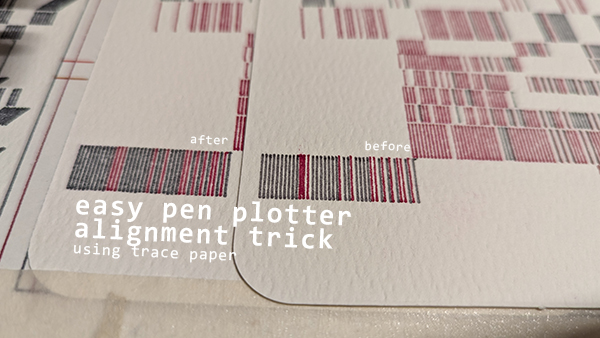

I was having some trouble getting consistent registration when swapping pens on my LY Drawbot pen plotter, so I came up with a way of checking the registration directly on the plot using trace paper.
First, I run the first color of the plot the whole way through. After swapping to the second pen, I lay a section of trace paper over the first plot area, and start the second color. Since the trace paper is on top, I can easily see how closely each color is aligning.
After enough lines have been drawn, I stop the plotter, and make adjustments to the origin my tiny amounts (0.25mm or so) and then restart the plot on a new section of trace paper. If further adjustments are needed, I repeat the process until I'm satisfied with how well aligned the colors are. Then I remove the trace, and plot on the actual paper, and repeat this process for each subsequent color / pen.
Though I've only used this for different colors of the same pen type so far, I think this could be a good method for swapping between very different pen barrel sizes, as your visually checking the results directly on the actual plot, and not relying on calculating offsets based on pen sizes or anything like that.
For a demonstration, I've posted a video of this process on YouTube here: easy pen plotter alignment trick